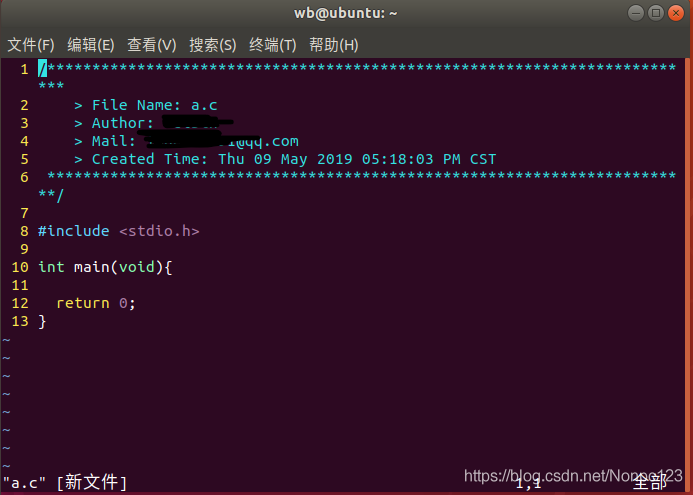
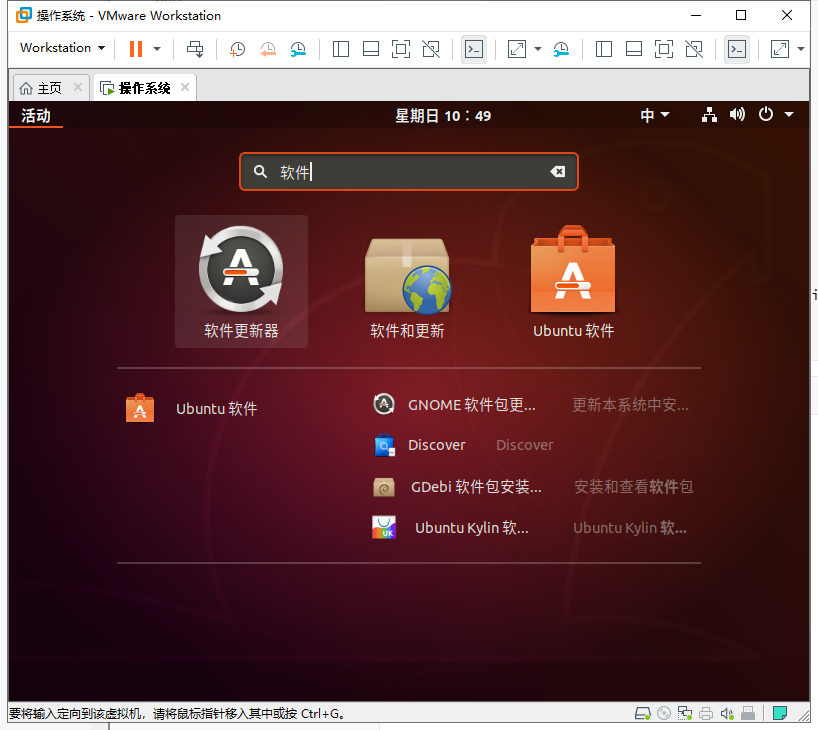
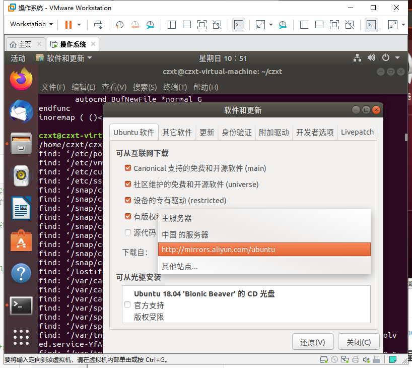

VMware及Ubuntu的安装
VMware使用版本15.5https://pan.baidu.com/s/1kP-gioCuPAhI2JFXJAAkSQ 提取码:647d
不要装15.0版本。15.0版本很卡，还会出现开机概率性黑屏的情况
VMwar中安装Ubuntu18.04步骤
参考资料：https://blog.csdn.net/qq_33287871/article/details/99212352
VMware15虚拟机启动黑屏解决方案
- 右键点击虚拟机->设置->显示器->加速3D图形(把他的勾勾打掉)
- 关掉所有VM开头的进程，cmd按管理员身份运行，输入netsh winsock reset，重启计算机 参考资料：https://blog.csdn.net/qq_30836399/article/details/104548273
VMware Tools（建议安装）
VMware Tools是一套可以提高虚拟机客户机操作系统性能并改善虚拟机管理的实用dao工具。功能包括
- 支持shuAero的操作系统上大大提升的图形性能和WindowsAero体验
- 使虚拟机中的应用程序像其他任何应用程序窗口一样显示在主机桌面上的Unity功能
- 主机与客户机文件系统之间的共享文件夹
- 在虚拟机与主机或客户端桌面之间复制并粘贴文本. 图形和文件
- 改进的鼠标性能
- 虚拟机中的时钟与主机或客户端桌面上的时钟同步
- 帮助自动执行客户机操作系统操作的脚本
- 启用虚拟机的客户机自定义。 参考资料：https://zhidao.baidu.com/question/93518587.html
安装vmware tool时提示：客户机操作系统己将 CD-ROM 门锁定，并且可能正在使用 CD-ROM……
安装步骤：
参考资料：https://blog.csdn.net/weixin_37987487/article/details/81271592
实验环境的安装
Ubuntu 18.4 安装vim,gcc以及gdb
在windows下安装软件，我们只需要有EXE文件，然后双击，下一步直接OK就可以了。但在LINUX下，不是这样的。每个LINUX的发行版，比如UBUNTU，都会维护一个自己的软件仓库，我们常用的几乎所有软件都在这里面。这里面的软件绝对安全，而且绝对的能正常安装。 在UBUNTU下，我们维护一个源列表，源列表里面都是一些网址信息，这每一条网址就是一个源，这个地址指向的数据标识着这台源服务器上有哪些软件可以安装使用
安装VIM
sudo apt-get install vim
配置vim
在主目录下新建.vimrc , 并添加以下内容
""""""""""""""""""""""""""""""""""""""""""""""""""""""""""""""""""""""""""""""""""""""""""" 显示相关" """""""""""""""""""""""""""""""""""""""""""""""""""""""""""""""""""""""""""""""""""""""""""set shortmess=atI " 启动的时候不显示那个援助乌干达儿童的提示"winpos 5 5 " 设定窗口位置"set lines=40 columns=155 " 设定窗口大小"set nu " 显示行号set go= " 不要图形按钮"color asmanian2 " 设置背景主题"set guifont=Courier_New:h10:cANSI " 设置字体"syntax on " 语法高亮autocmd InsertLeave * se nocul " 用浅色高亮当前行autocmd InsertEnter * se cul " 用浅色高亮当前行"set ruler " 显示标尺set showcmd " 输入的命令显示出来，看的清楚些"set cmdheight=1 " 命令行（在状态行下）的高度，设置为1"set whichwrap+=<,>,h,l " 允许backspace和光标键跨越行边界(不建议)"set scrolloff=3 " 光标移动到buffer的顶部和底部时保持3行距离set novisualbell " 不要闪烁(不明白)set statusline=%F%m%r%h%w\ [FORMAT=%{&ff}]\ [TYPE=%Y]\ [POS=%l,%v][%p%%]\ %{strftime(\"%d/%m/%y\ -\ %H:%M\")} "状态行显示的内容set laststatus=1 " 启动显示状态行(1),总是显示状态行(2)" set foldenable " 允许折叠set foldmethod=manual " 手动折叠"set background=dark "背景使用黑色set nocompatible "去掉讨厌的有关vi一致性模式，避免以前版本的一些bug和局限" 显示中文帮助if version >= 603set helplang=cnset encoding=utf-8endif" 设置配色方案"colorscheme murphy"字体"if (has("gui_running"))" set guifont=Bitstream\ Vera\ Sans\ Mono\ 10"endif "set fencs=utf-8,ucs-bom,shift-jis,gb18030,gbk,gb2312,cp936set termencoding=utf-8set encoding=utf-8set fileencodings=ucs-bom,utf-8,cp936set fileencoding=utf-8autocmd BufReadPost *\ if line("'\"") > 0 && line("'\"") <= line("$") |\ exe "normal g'\"" |\ endif" SHORTCUT SETTINGS: {{{1" Set mapleaderlet mapleader=","" Space to command mode.nnoremap <space> :vnoremap <space> :" Switching between buffers.nnoremap <C-h> <C-W>hnnoremap <C-j> <C-W>jnnoremap <C-k> <C-W>knnoremap <C-l> <C-W>linoremap <C-h> <Esc><C-W>hinoremap <C-j> <Esc><C-W>jinoremap <C-k> <Esc><C-W>kinoremap <C-l> <Esc><C-W>l" "cd" to change to open directory.let OpenDir=system("pwd")nmap <silent> <leader>cd :exe 'cd ' . OpenDir<cr>:pwd<cr>" PLUGIN SETTINGS: {{{1" taglist.vimlet g:Tlist_Auto_Update=1let g:Tlist_Process_File_Always=1let g:Tlist_Exit_OnlyWindow=1let g:Tlist_Show_One_File=1let g:Tlist_WinWidth=25let g:Tlist_Enable_Fold_Column=0let g:Tlist_Auto_Highlight_Tag=1" NERDTree.vimlet g:NERDTreeWinPos="right"let g:NERDTreeWinSize=25let g:NERDTreeShowLineNumbers=1let g:NERDTreeQuitOnOpen=1" cscope.vimif has("cscope")set csto=1set cstset nocsverbif filereadable("cscope.out")cs add cscope.outendifset csverbendif" OmniCppComplete.vimlet g:OmniCpp_DefaultNamespaces=["std"]let g:OmniCpp_MayCompleteScope=1let g:OmniCpp_SelectFirstItem=2" VimGDB.vimif has("gdb")set asm=0let g:vimgdb_debug_file=""run macros/gdb_mappings.vimendif" LookupFile settinglet g:LookupFile_TagExpr='"./tags.filename"'let g:LookupFile_MinPatLength=2let g:LookupFile_PreserveLastPattern=0let g:LookupFile_PreservePatternHistory=1let g:LookupFile_AlwaysAcceptFirst=1let g:LookupFile_AllowNewFiles=0" Man.vimsource $VIMRUNTIME/ftplugin/man.vim" snipMatelet g:snips_author="Du Jianfeng"let g:snips_email="cmdxiaoha@163.com"let g:snips_copyright="SicMicro, Inc"" plugin shortcutsfunction! RunShell(Msg, Shell)echo a:Msg . '...'call system(a:Shell)echon 'done'endfunctionnmap <F2> :TlistToggle<cr>nmap <F3> :NERDTreeToggle<cr>nmap <F4> :MRU<cr>nmap <F5> <Plug>LookupFile<cr>nmap <F6> :vimgrep /<C-R>=expand("<cword>")<cr>/ **/*.c **/*.h<cr><C-o>:cw<cr>nmap <F9> :call RunShell("Generate tags", "ctags -R --c++-kinds=+p --fields=+iaS --extra=+q .")<cr>nmap <F10> :call HLUDSync()<cr>nmap <F11> :call RunShell("Generate filename tags", "~/.vim/shell/genfiletags.sh")<cr>nmap <F12> :call RunShell("Generate cscope", "cscope -Rb")<cr>:cs add cscope.out<cr>nmap <leader>sa :cs add cscope.out<cr>nmap <leader>ss :cs find s <C-R>=expand("<cword>")<cr><cr>nmap <leader>sg :cs find g <C-R>=expand("<cword>")<cr><cr>nmap <leader>sc :cs find c <C-R>=expand("<cword>")<cr><cr>nmap <leader>st :cs find t <C-R>=expand("<cword>")<cr><cr>nmap <leader>se :cs find e <C-R>=expand("<cword>")<cr><cr>nmap <leader>sf :cs find f <C-R>=expand("<cfile>")<cr><cr>nmap <leader>si :cs find i <C-R>=expand("<cfile>")<cr><cr>nmap <leader>sd :cs find d <C-R>=expand("<cword>")<cr><cr>nmap <leader>zz <C-w>onmap <leader>gs :GetScripts<cr>autocmd BufNewFile *.cpp,*.[ch],*.sh,*.java exec ":call SetTitle()"func SetTitle()if &filetype == 'sh'call setline(1,"\#########################################################################")call append(line("."), "\# File Name: ".expand("%"))call append(line(".")+1, "\# Author: 你的名字")call append(line(".")+2, "\# mail: 你的qq号@qq.com")call append(line(".")+3, "\# Created Time:".strftime("%c"))call append(line(".")+4,"\#########################################################################")call append(line(".")+5, "\#!/bin/bash")call append(line(".")+6, "")elsecall setline(1, "/*************************************************************************")call append(line("."), " > File Name: ".expand("%"))call append(line(".")+1, " > Author: 你的名字")call append(line(".")+2, " > Mail: 你的QQ号@qq.com ")call append(line(".")+3, " > Created Time: ".strftime("%c"))call append(line(".")+4," ************************************************************************/")call append(line(".")+5, "")endifif &filetype == 'cpp'call append(line(".")+6, "#include <iostream>")call append(line(".")+7, "")call append(line(".")+8, "using namespace std;")call append(line(".")+9, "")call append(line(".")+10, "int main(void){")call append(line(".")+11, "")call append(line(".")+12, " return 0;")call append(line(".")+13, "}")endifif &filetype == 'c'call append(line(".")+6, "#include <stdio.h>")call append(line(".")+7, "")call append(line(".")+8, "int main(void){")call append(line(".")+9, "")call append(line(".")+10," return 0;")call append(line(".")+11, "}")endifautocmd BufNewFile *normal Gendfuncinoremap ( ()<Esc>i>执行 sudo vi /etc/vim/vimrc , 并且在文件尾添加如下内容 :
xxxxxxxxxxset ts=4set expandtabset autoindentset nuset nocompatibleset numberset autoindentset smartindentset showmatchset rulerset incsearchset tabstop=4set shiftwidth=4set softtabstop=4set cindentset nobackupset clipboard+=unnamed"inoremap [ []<Esc>i"inoremap { {}<Esc>i"inoremap ( ()<Esc>i"inoremap ' ''<Esc>i"inoremap " ""<Esc>i重启终端或电脑 , 检测是否成功

安装GCC
添加软件源
sudo add-apt-repository ppa:ubuntu-toolchain-r/test
使用apt-get安装软件经常需要先添加PPA，这样才能下载到apt-cache以外的软件。
输入"sudo add-apt-repository ppa:xxx"以后，会遇到两个问题：1. 长时间没有响应； 2，添加失败(ERROR: user or team does not exist)
以上主要由两种原因导致：1. CA证书损坏；2. 没有绕过代理；
我们先重装一遍CA证书：
xxxxxxxxxxsudo apt-get install --reinstall ca-certificates如果还不行，我们就绕过代理，加一个"-E"：
xxxxxxxxxxsudo -E add-apt-repository --update ppa:ubuntu-toolchain-r/test我采用上述2步，解决了困扰我好几个月的问题~
这个命令，会访问源列表里的每个网址，并读取软件列表，然后保存在本地电脑。
sudo apt-get update
sudo apt-get install gcc
sudo apt-get install g++
解决ubuntu的apt-get命令被占用
在运行ubuntu的apt-get install命令时，经常遇到如下错误：
无法获得锁 /var/lib/dpkg/lock-frontend - open (11: 资源暂时不可用)
无法获取 dpkg 前端锁 (/var/lib/dpkg/lock-frontend)，是否有其他进程正占用它？
列出使用的进程
ps -A | grep apt
使用kill命令杀死进程
sudo kill -9 886
Ubuntu中sudo apt-get update很慢解决办法
UI界面
打开软件和更新。点击下载自，选择阿里云镜像源


命令窗口界面
参考资料：https://blog.csdn.net/baidu_36602427/article/details/86551862
对于Ubuntu系统， 不同的版本的源都不一样，每一个版本都有自己专属的源。 而对于 Ubuntu 的同一个发行版本，它的源又分布在全球范围内的服务器上。Ubuntu 默认使用的官方源的服务器在欧洲，从国内访问速度很慢。国内的阿里、网易以及一些重点高校也都有 Ubuntu 的源，所以在装完 Ubuntu 系统后最好把官方源更换为国内的源。 这里我将告诉大家如何更换为国内的源：
step 1: 首先看看国内有哪些源，点我查看 我们选择阿里云源与清华大学源（其他源都行），将它们的 Ubuntu 源的服务器地址先复制下来，下面会用到。 阿里云源: http://mirrors.aliyun.com/ubuntu/ 清华源: http://mirrors.tuna.tsinghua.edu.cn/ubuntu/
step 2: 获取 Ubuntu 代号 Ubuntu 每个发行版本都有自己的代号，我们要通过我们电脑上 Ubuntu 的代号去找对应的源，Ctrl+Alt+T 打开终端，执行以下命令：
xxxxxxxxxxlsb_release -a1然后会得到我们自己的 Ubuntu 的版本信息 ，最后一栏 codename 后面的就是我们自己的 Ubuntu 的代号。比如我安装的是 Ubuntu 18.04.1，查出来的代号就是 bionic.
step 3: 编辑源
在 step 1 打开的那个网页最顶端找到 模板:18.04source ，将里面的内容复制到文本编辑器，
 将上图中红色的边框内的服务器地址改为 step 1 中阿里云源与清华大学源的服务器地址，然后将紫色边框中的内容改为你自己的Ubuntu 的代号。
例如：我的Ubuntu 18.04.1 代号是 bionic，所以更改后结果如下；
将上图中红色的边框内的服务器地址改为 step 1 中阿里云源与清华大学源的服务器地址，然后将紫色边框中的内容改为你自己的Ubuntu 的代号。
例如：我的Ubuntu 18.04.1 代号是 bionic，所以更改后结果如下；
x# 阿里云源deb http://mirrors.aliyun.com/ubuntu/ bionic main restricted universe multiversedeb http://mirrors.aliyun.com/ubuntu/ bionic-security main restricted universe multiversedeb http://mirrors.aliyun.com/ubuntu/ bionic-updates main restricted universe multiversedeb http://mirrors.aliyun.com/ubuntu/ bionic-backports main restricted universe multiverse##測試版源deb http://mirrors.aliyun.com/ubuntu/ bionic-proposed main restricted universe multiverse# 源碼deb-src http://mirrors.aliyun.com/ubuntu/ bionic main restricted universe multiversedeb-src http://mirrors.aliyun.com/ubuntu/ bionic-security main restricted universe multiversedeb-src http://mirrors.aliyun.com/ubuntu/ bionic-updates main restricted universe multiversedeb-src http://mirrors.aliyun.com/ubuntu/ bionic-backports main restricted universe multiverse##測試版源deb-src http://mirrors.aliyun.com/ubuntu/ bionic-proposed main restricted universe multiverse# 清华大学源deb http://mirrors.tuna.tsinghua.edu.cn/ubuntu/ bionic main restricted universe multiversedeb http://mirrors.tuna.tsinghua.edu.cn/ubuntu/ bionic-security main restricted universe multiversedeb http://mirrors.tuna.tsinghua.edu.cn/ubuntu/ bionic-updates main restricted universe multiversedeb http://mirrors.tuna.tsinghua.edu.cn/ubuntu/ bionic-backports main restricted universe multiverse##測試版源deb http://mirrors.tuna.tsinghua.edu.cn/ubuntu/ bionic-proposed main restricted universe multiverse# 源碼deb-src http://mirrors.tuna.tsinghua.edu.cn/ubuntu/ bionic main restricted universe multiversedeb-src http://mirrors.tuna.tsinghua.edu.cn/ubuntu/ bionic-security main restricted universe multiversedeb-src http://mirrors.tuna.tsinghua.edu.cn/ubuntu/ bionic-updates main restricted universe multiversedeb-src http://mirrors.tuna.tsinghua.edu.cn/ubuntu/ bionic-backports main restricted universe multiverse##測試版源deb-src http://mirrors.tuna.tsinghua.edu.cn/ubuntu/ bionic-proposed main restricted universe multiverse123456789101112131415161718192021222324252627282930step 4: 修改源文件 sources.list Ubuntu 的源存放在在 /etc/apt/ 目录下的 sources.list 文件中，修改前我们先做个备份，在终端中执行以下命令：
xxxxxxxxxxsudo cp /etc/apt/sources.list /etc/apt/sources.list.bcakup然后执行下面的命令打开 sources.list 文件，清空里面的内容，把上面我们编辑好的国内的源复制进去，保存后退出。
xxxxxxxxxxsudo gedit /etc/apt/sources.liststep 5: 更新软件列表和升级 在终端上执行以下命令更新软件列表，检测出可以更新的软件：
xxxxxxxxxxsudo apt-get update在终端上执行以下命令进行软件更新：
xxxxxxxxxxsudo apt-get upgradegcc gdb make的使用简略版
参考资料：https://blog.csdn.net/qq_37831145/article/details/78153221
gcc的使用
参考资料：https://blog.csdn.net/xiahouzuoxin/article/details/25481023
gcc生成可执行文件的过程

gcc main.c -o main
-o 选项表示生成目标文件名为main.exe。
gcc -E main.c -o main.i
-E 选项表示预处理操作，预处理就是将宏定义展开，头文件展开。预处理之后的目标文件保存在main.i，这时，你可以查看main.i的预处理结果，
gcc -S main.c -o main.s
-S 选项表示编译操作，其结果将生成汇编文件（*.s文件，这里使用-o选项定义目标文件为main.s）。我们也可以查看分析上述Hello代码的汇编代码，
NOTES: 生成汇编文件（包含汇编代码的文件）的过程是编译，不是汇编，汇编是将汇编代码转换成目标文件*.obj的过程。 从这点上理解，汇编文件生成可执行文件的过程是没有编译操作的。
gcc -c main.c -o main.obj
-c 选项将源文件生成目标文件main.obj，main.obj其实已经是一种近似可执行文件了，通过链接操作链接相应的库就可以执行了。
第4步的链接直接使用gcc main.c -o main就可以完成
gcc的一些其它选项
- -g 以操作系统的本地格式(stabs,COFF,XCOFF,或DWARF)产生调试信息. 只有使用了-g才能使用gdb工具进行调试
xxxxxxxxxxgcc -g main.c -o main gdb main -Dname 宏定义某个name宏，这个宏是全局的，在控制程序上很有帮助 比如有如下main.c源程序，通过_DEBUG宏可以控制是否打印结果，
xxxxxxxxxxint main(void){int a = 2;int b = 3;int c = a + b;printf("c=%d\n", c);return 0;}
GDB的使用
参考资料：https://blog.csdn.net/xiahouzuoxin/article/details/25481023
gdb调试C程序
xxxxxxxxxxint add(int a, int b){ int c = a + b; return c;} int main(void){ int i = 0; int j = 3; int k = add(i,j); printf("i=%d, j=%d, k=%d\n", i,j,k); return 0;}使用gcc编译及gdb调试程序的方法如下：
xxxxxxxxxxgcc -g main.c -o main ### 注：编译时使用-g选项才能生成符号表用于gdb调试xxxxxxxxxxAdministrator@DADI-20131210YK /cygdrive/e/MyDesigner/Projects/notes/codes/实例学习gcc+gdb+make/gdb$ gcc -g main.c -o main ### 注：编译时使用-g选项才能生成符号表用于gdb调试 Administrator@DADI-20131210YK /cygdrive/e/MyDesigner/Projects/notes/codes/实例学习gcc+gdb+make/gdb$ gdb mainGNU gdb (GDB) 7.3.50.20110821-cvs (cygwin-special)Copyright (C) 2011 Free Software Foundation, Inc.License GPLv3+: GNU GPL version 3 or later <http://gnu.org/licenses/gpl.html>This is free software: you are free to change and redistribute it.There is NO WARRANTY, to the extent permitted by law. Type "show copying"and "show warranty" for details.This GDB was configured as "i686-cygwin".For bug reporting instructions, please see:<http://www.gnu.org/software/gdb/bugs/>...Reading symbols from /cygdrive/e/MyDesigner/Projects/notes/codes/实例学习gcc+gdb+make/gdb/main...done.(gdb) l main ### 注：list查看程序，l [函数名/行数]1617 return c;18 }1920 int main(void)21 {22 int i = 0;23 int j = 3;2425 int k = add(i,j);(gdb) ### 注：Enter按键接上面继续查看程序2627 printf("i=%d, j=%d, k=%d\n", i,j,k);2829 return 0;30 }31(gdb) b 23 ### 注：在23行添加断点Breakpoint 1 at 0x4010d5: file main.c, line 23.(gdb) b add ### 注：在add函数入口添加断点Breakpoint 2 at 0x401096: file main.c, line 15.(gdb) b 29 ### 注：在29行添加断点Breakpoint 3 at 0x401112: file main.c, line 29.(gdb) info break ### 注：查看已添加的断点信息Num Type Disp Enb Address What1 breakpoint keep y 0x004010d5 in main at main.c:232 breakpoint keep y 0x00401096 in add at main.c:153 breakpoint keep y 0x00401112 in main at main.c:29(gdb) r ### 注：运行程序Starting program: /cygdrive/e/MyDesigner/Projects/notes/codes/实例学习gcc+gdb+make/gdb/main[New Thread 2492.0x36c][New Thread 2492.0x1140] Breakpoint 1, main () at main.c:2323 int j = 3;(gdb) r ### 注：运行程序$1 = 0(gdb) n ### 注：next下一步（把函数当一条语句直接跳过）25 int k = add(i,j);(gdb) s ### 注：step下一步（会执行到函数内部） Breakpoint 2, add (a=0, b=3) at main.c:1515 int c = a + b;(gdb) c ### 注：continue从运行到的当前位置继续往下执行，直到遇到下一个断点Continuing.i=0, j=3, k=3 Breakpoint 3, main () at main.c:2929 return 0;(gdb) finish ### 注：直接执行到当前函数的结尾处，对main函数不起作用"finish" not meaningful in the outermost frame.(gdb) c ### 注：continue继续执行Continuing.[Inferior 1 (process 2492) exited normally](gdb) q ### 注：程序执行结束，quit退出gdb Administrator@DADI-20131210YK /cygdrive/e/MyDesigner/Projects/notes/codes/实例学习gcc+gdb+make/gdb$xxxxxxxxxx(gdb) l main ### 注：list查看程序，l [函数名/行数](gdb) b 23 ### 注：在23行添加断点(gdb) b add ### 注：在add函数入口添加断点(gdb) b 29 ### 注：在29行添加断点(gdb) info break ### 注：查看已添加的断点信息(gdb) r ### 注：运行程序(gdb) n ### 注：next下一步（把函数当一条语句直接跳过）(gdb) s ### 注：step下一步（会执行到函数内部）(gdb) c ### 注：continue从运行到的当前位置继续往下执行，直到遇到下一个断点(gdb) finish ### 注：直接执行到当前函数的结尾处，对main函数不起作用(gdb) c ### 注：continue继续执行(gdb) q ### 注：程序执行结束，quit退出gdb使用Makefile构建工程
参考资料：https://blog.csdn.net/xiahouzuoxin/article/details/25481023
Make是构建工程的工具，Make工具对用户编写的Makefile进行解析，实现只需要一个命令就可以编译、链接整个工程。
以Example2为例:
mian.cpp
xxxxxxxxxxint main(void){ int a = 2; int b = 3; int c = add(a,b); int d = sub(a,b); printf("c=%d\n", c); printf("d=%d\n", d); return 0;}add.c
xxxxxxxxxxint add(int a,int b){ return (a+b);}add.h
xxxxxxxxxxextern int add(int a, int b);sub.c
xxxxxxxxxxint sub(int a, int b){ return (a-b);}sub.h
xxxxxxxxxxextern int sub(int a, int b);Makefile文件内容为:
xxxxxxxxxxmain:main.o add.o sub.o # 目标:依赖 gcc main.o add.o sub.o -o main # 命令（必需以TAB开头） main.o:main.c gcc -c -D_DEBUG main.c -o main.oadd.o:add.c gcc -c -D_DEBUG add.c -o add.osub.o:sub.c gcc -c -D_DEBUG sub.c -o sub.o.PHONY:cleanclean: -rm main *o回到命令行，使用make命令看看Makefile的效果：
xxxxxxxxxxmake ./main Makefile的格式
xxxxxxxxxx目标：依赖命令（以TAB开头）目标是链接后的可执行文件名；依赖是工程中的用于编译的c文件和用于连接的*.o文件的集合；就用gcc编译的工程而言，命令就是gcc命令，可以使用任意的gcc参数
使用make命令解析Makefile文件，解析的文件名可以是Makefile或makefile，如果是其它名称，则需要使用make -f [filename]指定文件名。强烈建议使用Makefile作为文件名（符合Linux的哲学——简洁、首字母大写容易突出文件位置）
Makefile可以有多个目标（main.o add.o sub.o），但只能有一个最终目标（main）。Makefile文件中第一条规则中的目标将确定为最终目标。make命令默认执行最终目标，若只执行Makefile中其它目标，使用make [Target]，如要清除工程下的目标文件，使用
make cleanMakefile中将那些没有任何依赖只有执行动作的目标称伪目标（clean），使用.PHONY声明。伪目标不能作为最终目标。
Makefile中使用变量：Makefile中的变量将是按字符串的方式进行替换，下面是一些系统特殊的变量。
xxxxxxxxxx$^: 代表所有依赖文件$@：代表目标$<：代表依赖文件中的第一个依赖文件变量可以大大简化Makefile的编写复杂度，使用变量后的Makefile如下：
xxxxxxxxxxCC=gccOBJS=main.o add.o sub.oCFLAGS=-D_DEBUGmain:$(OBJS)$(CC) $(CFLAGS) $^ -o $@main.o:main.c$(CC) $(CFLAGS) -c $^ -o $@add.o:add.c$(CC) $(CFLAGS) -c $^ -o $@sub.o:sub.c$(CC) $(CFLAGS) -c $^ -o $@.PHONY:cleanclean:-rm main *.o其中CC、OBJS、CFLAGS都是自定义的Makefile变量，@是系统特殊的变量
上面的Makefile还是太复杂，可不可以再简单点，没问题：使用模式匹配。
xxxxxxxxxxCC=gccOBJS=main.o add.o sub.oCFLAGS=-D_DEBUGmain:$(OBJS)$(CC) $(CFLAGS) $^ -o $@%.o:%.c$(CC) $(CFLAGS) -c $^ -o $@.PHONY:cleanclean:-rm main *.o上面的Makefile使用%用来匹配任何非空字符串。
- 模式规则“%.o:%.c”，它表示的含义是：所有的.o文件依赖于对应的.c文件。
- 模式规则%.o:debug.h，表示所有的.o文件都依赖于头文件“debug.h”
在编写大型程序时，常常工程中的.c都有与之对应的.h文件，以上两种用法在Makfile很常用。
附：Linux使用命令
Linux find过滤掉没有查看权限的文件
xxxxxxxxxxfind . -name "xxx" 2> /dev/null移动文件
xxxxxxxxxxmv file1 dir1vim查找单词
命令模式下，输入/user
/要搜索的字符串或者字符
按下回车之后，可以看到vim已经把光标移动到该字符处和高亮了匹配的字符串
查看下一个匹配按下n(小写n)
跳转到上一个匹配按下N（大写N）
打开别的文件，发现也被高亮了，输入nohlsearch或noh或set noh
vim清空
让游标快速跳到文件最顶部行首
xxxxxxxxxxgg删除游标之后的所有内容
xxxxxxxxxxdG将目前目录下的所有文件与子目录皆设为 文件所有者可以读+写+执行
xxxxxxxxxxchmod -R 700 *要检查特定的包，比如firefox是否安装了，使用这个命令：
xxxxxxxxxxdpkg -s firefox
ubuntu删除软件
sudo apt-get remove package 删除包
sudo apt-get remove package - - purge 删除包，包括删除配置文件等
但是为什么重新安装会失败呢？ 系统中存在dpkg这么一个工具，会记录软件包的状态，不只是安装和未安装两种状态，会记录以下这些状态：
not-installed - The package is not installed on this system config-files - Only the configuration files are deployed to this system half-installed - The installation of the package has been started, but not completed unpacked - The package is unpacked, but not configured half-configured - The package is unpacked and configuration has started but not completed triggers-awaited - The package awaits trigger processing by another package triggers-pending - The package has been triggered installed - The packaged is unpacked and configured OK
当执行apt-get install时，apt软件包管理工具会先检查要安装的软件的状态，向我这种情况下，手动删除了软件配置后，并不会引起dpkg中记录的状态的改变，即仍为 config-files 状态，所以安装过程会直接跳过创建配置文件这一过程。于是当软件想要启动进程的时候，才发现找不到文件。
所以当你想彻底地删除软件包的时候，用 apt-get purge 吧
查找包的详细信息
查看git包的详细信息
xxxxxxxxxxdpkg -s git